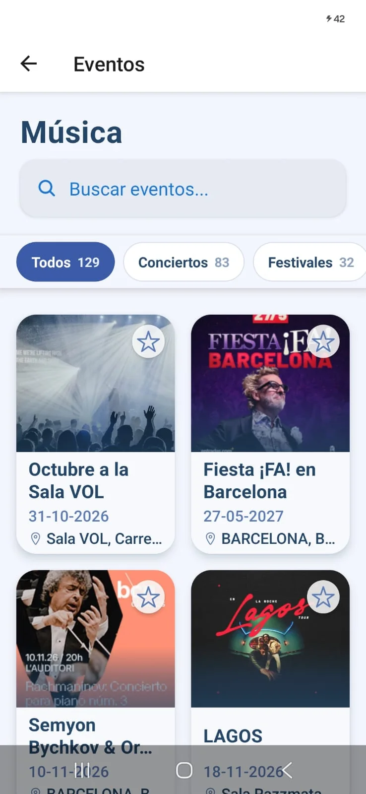
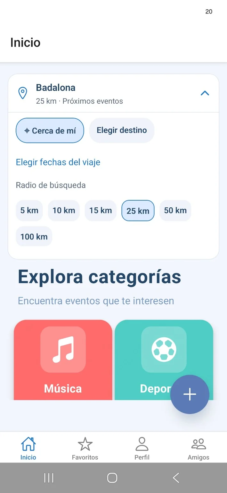
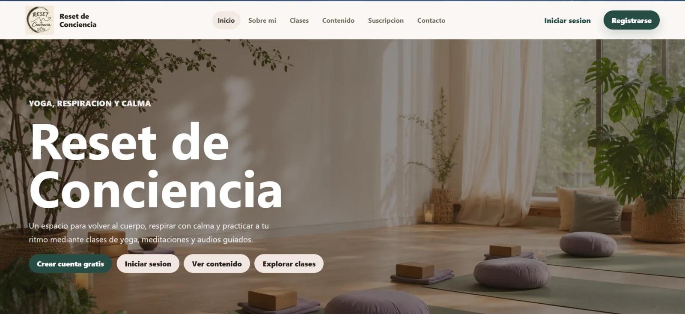
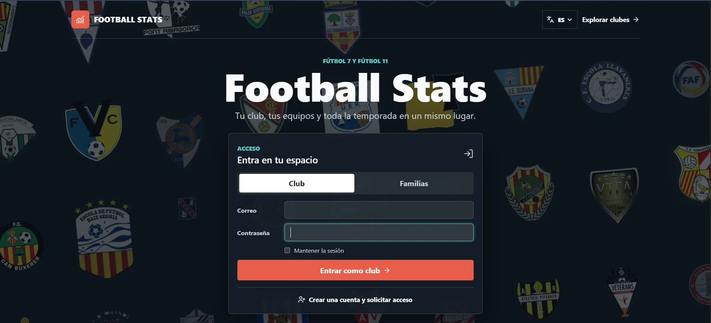
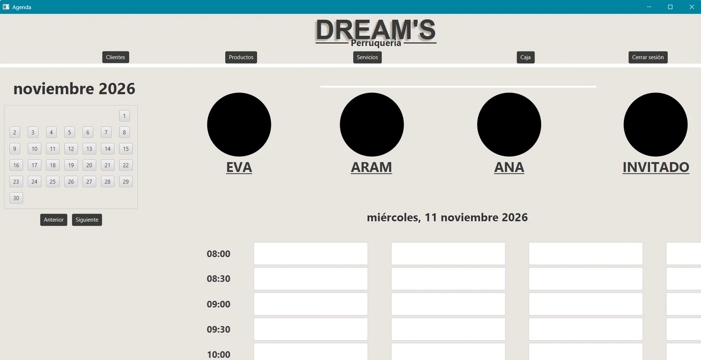

01 / APP MÓVIL● Android

PROYECTO 01 Publicado
GoPlan
Aplicación Android para descubrir, guardar y compartir eventos. Búsqueda por ubicación, perfiles, favoritos, creación de eventos e integración de fuentes externas.
Ver en Google PlayAbierto a oportunidades junior · Barcelona y remoto
Soy Sergio de la Cruz. Desarrollo aplicaciones web, móviles y herramientas de gestión. Estoy finalizando el Grado Superior de DAW y ya he llevado proyectos reales desde la idea hasta su publicación.

Aplicaciones que he desarrollado a partir de necesidades concretas, con apoyo de herramientas de IA y revisión del resultado.

Aplicación Android para descubrir, guardar y compartir eventos. Búsqueda por ubicación, perfiles, favoritos, creación de eventos e integración de fuentes externas.
Ver en Google Play
Captura real · Reset de ConcienciaWeb desarrollada para otra persona, con JavaScript, servicios de backend y base de datos mediante Supabase, y despliegue en Vercel.
Visitar sitio web
Captura real · Football StatsPlataforma de estadísticas de fútbol base con acceso diferenciado para clubes y familias. Datos deportivos, temporadas y consulta de información de equipos.
Demostración disponible bajo solicitud
Captura real · Peluquería DreamsHerramienta de gestión para una peluquería: agenda por trabajadores, clientes, servicios, productos, caja y estadísticas de negocio.
Proyecto de escritorio · sin enlace públicoTecnologías que utilizo en proyectos reales y que continúo reforzando.
JavaScript · PHP · Java · Python
React · React Native · Node.js · Laravel · JavaFX
PostgreSQL · MySQL · Supabase · APIs REST
Git · GitHub · Vercel · Render · VS Code · Codex
Estoy terminando el ciclo formativo de grado superior en Desarrollo de Aplicaciones Web (DAW), con prácticas previstas para enero de 2027. Mi objetivo es incorporarme profesionalmente al sector del desarrollo de software.
Mi experiencia laboral previa me ha enseñado a escuchar necesidades, resolver incidencias y trabajar con responsabilidad. He aprovechado esa experiencia para crear aplicaciones propias y desarrollar soluciones para otras personas.
Me interesa incorporarme a un equipo donde pueda seguir aprendiendo, contribuir a proyectos reales y crecer como desarrollador web o de aplicaciones.
Si has llegado desde LinkedIn, puedes escribirme directamente por mensaje privado en mi perfil.
Ver mis proyectos